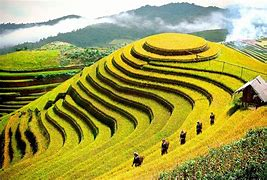
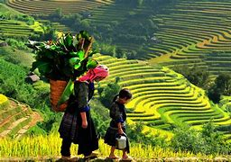

Sapa is a small, mountain town in Lao Cai Province. It is located about 350 km northwest of Hanoi, close to the Chinese border. Here's where you'll find the Hoang Lien Son range of mountains, which includes Fan Si Pan—the country's highest peak. This quiet Vietnamese town is home to different ethnic tribal groups. There are five main ethnic groups in Sapa: the Hmong, Dao, Tay, Giay and Xa Pho. It is said that Sapa was first occupied by the first four groups, since the Vietnamese from the lowlands (better known as the Kinh) did not colonise the highest valleys. These days.
Sapa welcomes a diverse range of visitors, attracted by the highland tribes, iconic rice paddies and forest treks. The whole area is blessed with awe-inspiring natural beauty. Hiking and enjoying nature is the name of the game in Sapa. The most prominent attraction in the area around Sapa is Fan Si Pan, which is the highest mountain in Vietnam. It's only 19km from town. This may seem like a short distance, but the trek is not easy; the rough terrain and unpredictable weather present some difficulties. Tourists who are fit and have mountain climbing experience will enjoy this attraction the most, as the peak is accessible all year round. Technical climbing skills are not necessary, but endurance is a must.Fan Si Pan can be found in Hoang Lien National Park, which is an attraction in itself.
The park covers a picturesque mountain landscape and several forests, and serves as the habitat for a diverse set of animals. Some species can only be found in northwest Vietnam and are highly endangered. Nature lovers will truly appreciate this park. Other attractions that are part of the Hoang Lien National Park include the Cat Cat Village and the Ta Phin Village and cave. What to Do in Sapa. Sapa is a small, we highly recomend taking a stroll up and down the steep streets of this tiny mountain town.In Sapa town, there's a small museum and a modest cathedral. You may be hassled by tribal ladies to buy their wares, but it's fun to talk to them.
Sapa Restaurants and Dining Scene If you're looking for a good meal in Sapa, head to Cau May Street, which is the main street where most of the restaurants and cafés are located. Moment Romantic Restaurant is recommended for a good quality Vietnamese meal. The menu is diverse, ingredients are fresh, and there are many vegetarian options. It's a mid-range restaurant. Delta Restaurant is known for its reasonable prices and well-made Italian dishes like pizza and lasagne. They also serve Vietnamese dishes. If you're looking for a local experience, try a Vietnamese hot pot to warm you up on a cold night at Gerbera Restaurant. The service occasionally borders on rude, but you can enjoy the rustic charm of this local restaurant and its authentic décor. Visitors with a sweet tooth will love Le Gecko. This establishment's pastries are the best in town. It also serves light meals. Enjoying a cup of hot chocolate here after a chilly day is a nice treat. Other dining spots worth visiting include Nature Bar and Grill, and Rose Garden.
If you miss the Bac Ha Market, you can wait until Tuesday for the Coc Ly Market, which is smaller and less varied.There are a couple of bars offering a place to meet fellow travellers, sink a few beers and play a game of pool. Most of the restaurants that sell beer and other drinks tend to close early in the evening. You can find a few karaoke joints frequented by middle-class Vietnamese travellers. There are no nightclubs or dance halls. The H'mong Sisters is probably the most popular bar in town. If you're looking for live music in Sapa, head to the Wooden Pub. The place gets packed when live bands play on weekends. If you want to buy something, bargain hard. The tribal ladies selling the goods can drive a very hard bargain.
Sapa Shopping Like most rural areas in Vietnam, there are no shopping malls in Sapa. Instead, shopping takes place at markets where locals buy (and sell) an assortment of goods. Fresh ingredients, handicrafts and clothing are plentiful. Tourists can also purchase souvenirs. There's also lots of faux-tribal goods that have come stright from a factory in China. Located next to the bus station, Sapa Market is open daily from 06:00 to 14:00. The town is very small, so it's easy to find this local market. The most popular day to visit is Saturday. It was made famous mostly because of the 'Love Market,' wherein teenagers from the tribes go to town to find a partner. Unfortunately, it has become significantly commercial in recent years. The Bac Ha Market and Coc Ly Market are good alternatives for those who want to experience shopping the way locals do without being dampened by commercialisation. If you want to visit these Tribal markets, you should book a day tour from a travel agent in town. Every Sunday, the different hill tribes that meet in the morning to sell their wares make up the Bac Ha Market. Unlike the Saturday Market, this is more about local business than tourism. The market is open until noon, but the best time to visit is between dawn and late morning.
Trekking and Hiking in Sapa Trekking is the main activity in Sapa. Trekking maps are available from the Tourist Information centre on Fansipan Street. These maps are invaluable if you want to trek aroundthe area without a guide. They show the walking trails and trekking routes around town. Most hotels in Sapa offer tourists guided half-day and day long treks, but the best places to inquire about these treks are the Cha Pa Garden, Auberge Hotel, Cat Cat View Hotel and Mountain View Hotel. While it is possible to go hiking around Sapa on your own, it's better to have the assistance of a guide to guarantee a more enriching experience.
When it comes to longer treks or overnight stays in the villages, the knowledge of a local will come in handy. Regardless of being on a walking tour or not, tribal women will walk with you and try to assist you in any possible way hoping for a tip. Tourists who want to learn something new can go on community-based tours to Sin Chai, a Hmong village. On most tours, overnight stays are arranged so people can learn about textiles, or tribal music and dance. History of Sapa It was only when the French arrived in Tonkin in the 19th century that Sapa was acknowledged and included on the national map. The site where Sapa is located became a key location for the French military as well as missionaries. For decades, this mountainous backwater was unknown to tourists, but in 1993 Sapa became accessible to many when it was formally promoted as a tourists destination.